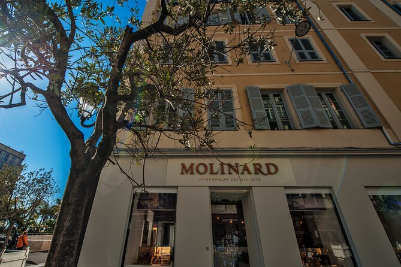
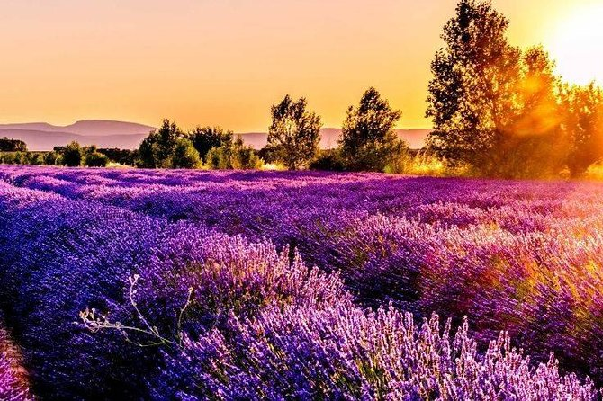
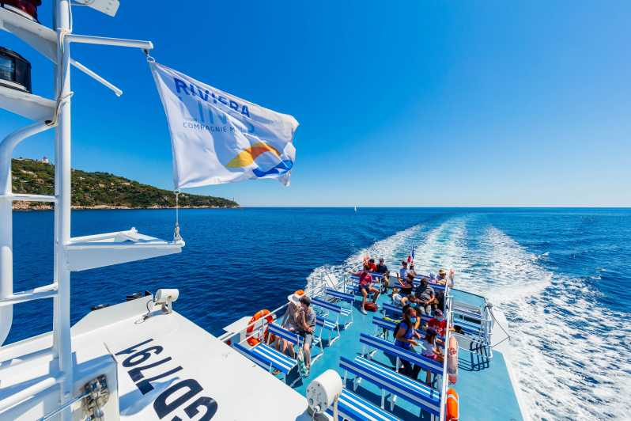
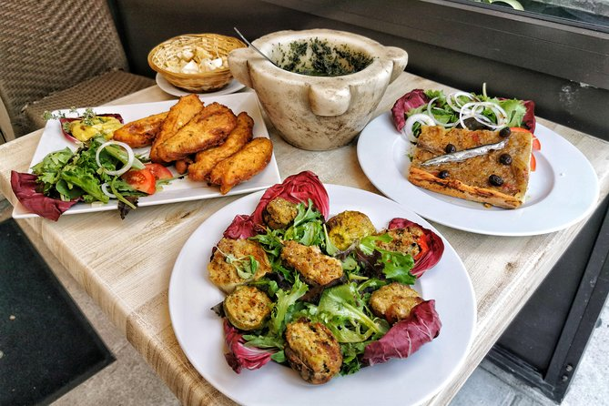
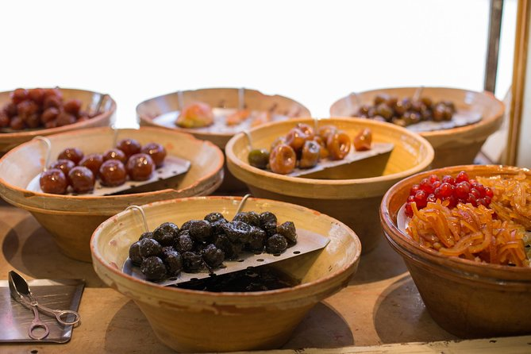

Siga o seu nariz para criar o perfume perfeito durante uma oficina na boutique de perfumes Molinard em Nice. Descubra o que torna os perfumes franceses tão apreciados e aprenda como mixologistas mestres combinam diferentes bases, fragrâncias e óleos para criar misturas de cheiro adocicado. Em seguida, experimente sua própria mão na perfumaria misturando ingredientes para criar seu próprio aroma característico para levar para casa em um frasco.
Cruze a curva costeira da Riviera Francesa até St Tropez em uma excursão de dia inteiro saindo de Nice. Contemple vistas panorâmicas do oceano enquanto navega pelo Mar Mediterrâneo até a glamourosa cidade de St Tropez, famosa pelos famosos rostos que freqüentam o opulento resort. Passe um dia a explorar a sua vontade e descubra atracções fascinantes como a Igreja de St Tropez e a Cidadela de St Tropez. Alternativamente, visite as sofisticadas boutiques de roupas de grife, experimente especialidades de frutos do mar em restaurantes gourmet e relaxe nas areias finas das praias imaculadas da cidade. Regresso a Nice de barco no final do seu dia de descanso.
Cruze a curva costeira da Riviera Francesa até St Tropez em uma excursão de dia inteiro saindo de Nice. Contemple vistas panorâmicas do oceano enquanto navega pelo Mar Mediterrâneo até a glamourosa cidade de St Tropez, famosa pelos famosos rostos que freqüentam o opulento resort. Passe um dia a explorar a sua vontade e descubra atracções fascinantes como a Igreja de St Tropez e a Cidadela de St Tropez. Alternativamente, visite as sofisticadas boutiques de roupas de grife, experimente especialidades de frutos do mar em restaurantes gourmet e relaxe nas areias finas das praias imaculadas da cidade. Regresso a Nice de barco no final do seu dia de descanso.
Em vez de jantar em um único restaurante, transforme seu almoço em uma aventura culinária de vários pratos em uma excursão gastronômica guiada a Nice. Você experimentará alguns dos sabores mais emblemáticos da cidade em estabelecimentos locais autênticos, enquanto aprende o que torna a comida Niçois tão especial. É uma ótima maneira de descobrir seus favoritos, conhecer locais e obter dicas sobre onde comer, beber e explorar na cidade.
Trate seu paladar com os sabores de Provença com uma excursão gastronômica a pé em Nice! Explore a cidade antiga, ou Vieux Nice, com um guia gastronômico, e desfrute de até 20 amostras diferentes de favoritos regionais, incluindo vinho francês produzido localmente. Visite os melhores mercados, restaurantes e lojas de comida especializada da cidade e aprenda como os habitantes locais fazem compras e preparam refeições diariamente. Prove a influência italiana na cozinha provençal e aprenda a fazer uma autêntica salada Niçoise em casa. O tamanho da excursão é limitado a 10 pessoas, para proporcionar uma experiência personalizada para pequenos grupos.
